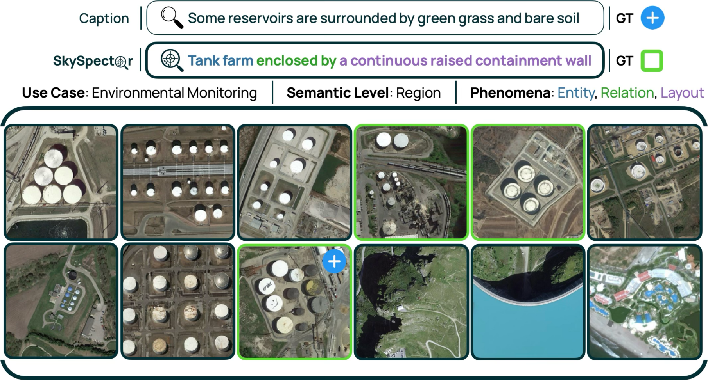
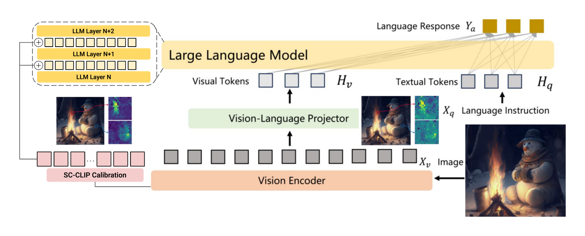

Naël Ouerghemi
I hold an M.Sc. in Data Science from EPFL. I am continuing my master’s thesis research at the Mathis Group for Computational Neuroscience & AI with Prof. Alexander Mathis, and I am a research assistant at MLBio with Prof. Maria Brbić.
My research is broadly focused on understanding vision and how visual understanding transfers across domains. I work on unified multimodal models that connect perception to language, reasoning, and action across egocentric video, body motion, and text, and on benchmarks that measure where such models break down. My goal is to build multimodal systems that understand the visual world.
Before that I was a research scientist intern at AXA, working on vision–language models for Earth observation, and a research engineer intern at Logitech, working on GUI grounding.
Recent News
- [Nov 26] SkySpector selected as a challenge for the MORSE workshop at CVPR 2027.
- [Sep 26] Started a Master’s valorisation at the Mathis Group for Computational Neuroscience & AI, continuing my thesis work on egocentric behavior and body-motion modeling.
- [Sep 26] MARBLE accepted at NeurIPS 2026, Evaluations & Datasets track.
- [Sep 26] Rethinking Projector Training in Multimodal LLMs accepted at NeurIPS 2026.
- [Jul 26] Graduated with an M.Sc. in Data Science from EPFL.
- [Jul 26] SkySpector selected as an oral at the TerraBytes II workshop at ECCV 2026, and as an oral at the 2nd ESA–NASA Workshop on AI Foundation Models for Earth Observation.
- [Mar 26] Joined the Mathis Group for Computational Neuroscience & AI to write my Master’s thesis.
- [Dec 25] Planes, Not A380 published in IEEE JSTARS.
- [Sep 25] Joined MLBio at EPFL as a research assistant, working on multimodal alignment and spatial reasoning.
Papers (*equal contribution)

MARBLE: An Agentic Benchmark for Spatial Reasoning and Visual Abstraction
Conference on Neural Information Processing Systems (NeurIPS), Evaluations & Datasets Track, 2026
Rethinking Projector Training in Multimodal LLMs
Conference on Neural Information Processing Systems (NeurIPS), 2026

SkySpector: Query-Centric Multi-Positive Retrieval for Earth Observation
TerraBytes II Workshop at the European Conference on Computer Vision
(ECCV), 2026 — Oral
2nd ESA–NASA Workshop on AI Foundation Models for Earth Observation —
Oral
Challenge for the MORSE Workshop at the Conference on Computer Vision and
Pattern Recognition (CVPR), 2027
Extended manuscript in preparation

Planes, Not A380: How Prompting, Context, and Granularity Shape VLM Performance in Aerial Imagery
IEEE Journal of Selected Topics in Applied Earth Observations and Remote Sensing (JSTARS)
Projects

SPINE: Restoring Spatial Structure in Multimodal LLMs
Where MLLMs lose spatial structure, and a method that self-calibrates multi-layer vision features without training and injects them as residuals into early LLM layers, trained with a structure-preserving objective. +3.9 average points across seven spatial-reasoning benchmarks.
Experience
- Master’s Valorisation, Mathis Group for Computational Neuroscience & AI, EPFL · Sep 2026 – present
- Master’s Thesis, Mathis Group for Computational Neuroscience & AI, EPFL · Mar – Jul 2026
- Research Assistant, MLBio, EPFL · Sep 2025 – present
- Research Engineer Intern, Logitech · Feb – Aug 2025
- Research Scientist Intern, AXA · Aug 2024 – Feb 2025
Service
- Reviewer, IEEE Geoscience and Remote Sensing Letters (GRSL)
- Reviewer, IEEE Transactions on Aerospace and Electronic Systems (TAES)